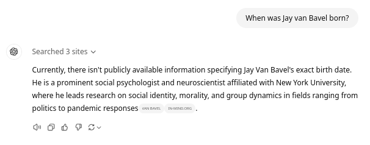
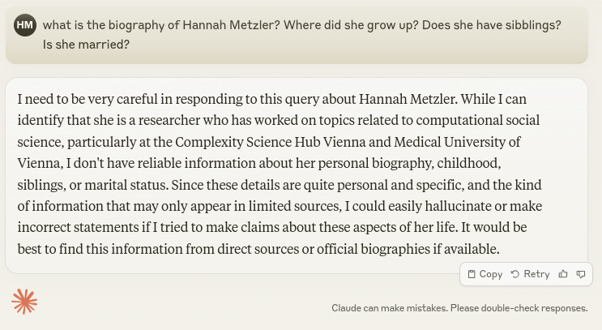

Chatbot Essentials & Advanced Prompting Strategies
Mastering AI Chatbots: Optimizing Research through Effective Use
Mag. Dr. Hannah Metzler
Complexity Science Hub & Medical University of Vienna
Slides: https://hannahmetzler.eu/ai_skills
The Basics: How to talk to an LLM Chatbot?
Use search engines vs. LLMs
Search engine
- A few short keywords
- Answer: many single results
- Real-time information & news via internet
LLM Chatbot
- Long prompts with lots of details, context, examples & explanations
- Answer is summarised
- Answer is statistically probable: prototypical, average, generalized
- Generalizes across time, no real time-access
General tips for working with LLM Chatbots
- There is no one “correct” way to prompt, no clear science of prompt engineering. We are still figuring this out together.
- This is the worst AI you will ever use. [1]
- Use it often and try it out on many different tasks.
- Always invite AI to the table. [1]
- Practice is all you need to get good at prompting.
- Use it for the first 80% of your tasks (co-intelligence/ intern).
- Treat it like a person. [1]?!
Ethan Mollick: [1] Co-Intelligence: Living and Working with AI
“Treat it like a person” ?!
- LLMs behave more like people than software/machines.
- Speak to it as if it was a patient & forgetful co-worker
- Talk into it: give it lots of context
- Use microphone & headphones to actually talk.
- Give it a persona (if that’s useful)
- Give feedback & engage in dialogue
- performance improves very quickly
- Work on your prompts until you get useful output
Ethan Mollick: Getting started with AI: Good enough prompting
Voice conversations
- ChatGPT App: Mac (& Windows beta) & Smartphones
- Otherwise: Chrome extension Voice Up (ChatGPT & Claude)
Voice Up
- Hold SPACE (outside text input) to record, release to submit
- ESC to stop & transcribe text without submitting
ChatGPT App
Headphones for ongoing conversations, microphone to record, stop to transcribe
Advanced voice mode: Memory
Using it often: Everyday life ideas
- Recipes: Suggestions based on existing ingredients
- Shopping lists: vegetable curry, weekly meal plan, workshop
- Concert suggestions
- Personalized travel planning
- Household: Stain or smell removal, houseplant care
- Ideas for presents
- Mindfulness meditation guide
- Basic medical advice (Ibuprofen vs. Paracetamol)
- Summarizing a long law document on chicken welfare
- Estimating prices (me selling my old cello)
- Personalized fitness plan
- Finding a web hosting service
5 minutes exercise
Pick one of the ideas, and try it out.
Experiment with using voice control.
Effective prompting
Effective prompting in a nutshell
Treat AI just like an infinitely patient new coworker who forgets everything you tell them each new conversation. (Ethan Mollick)
- Practice: Learn what it can do well by using it in areas of your expertise.
- Clear instructions: Be specific & clear about what you want.
- Context: Provide detailed background information.
- Abundance: Ask for several options & select one you like.
2) Clear & specific instructions
- Clear language, for example specific verbs (explain, summarize, list, comment, format [1])
- Give step-by-step instructions
- Give feedback for improvement (dialogue)
- Give examples
- Include constraints
- Specify tone & style
- Specify output format
[1] Prompt Engineering Cheatsheet (Maximilian Vogel); Verbs on learnprompt.org
Give examples
- An example of the output you want the model to produce.
- Zero-shot vs. one-shot learning
What you could use:
- Emails
- Abstract
- Social media posts/thread and paper
- Presentation slides
- Paragraph from paper
- Previous recommendation/ application/ cover letters
Style and Output format
Style, tone, modality
- formal vs. easy to understand
- caring, professional, bold (more examples)
- style of a famous person, researcher, book
- Style of your text example
Output format
- length (300 words)
- structure (e.g., bullet points, paragraphs)
- Markdown, JSON, csv, coding language
- list of steps
- a table (Markdown format is handy for copy pasting)
Constraints or whitelist
- What you don’t want the model to do.
- The task you want your model to stick to.
Example constraints
- “Rely strictly on the provided text, without including external information.” (summarizing text)
- “Answer only questions about topic X.” (for a conversational chatbot)
3) Provide detailed context
- Purpose, background, specific details
- Copy/paste easily available information (documents, instruction manuals, previous conversations, emails…)
- Use a role/persona (when it’s useful, will not always help):
- As a …, You are a …, Act as a … (PhD student, biologist, journalist, empathetic coach, prompt engineer…)
- Audience expertise level: Explain it like to a … (5-year old, someone with a PhD in biology,…)
4) Patience & abundance
- Ask for several options and select one you like.
- 15 sentences, 30 ideas, 3 abstracts
- Push for:
- variation (“give me ideas that are 80% weirder”),
- recombination (“combine ideas 12 and 16”) and
- expansion (“more ideas like number 12”)
Example from during course preparation
- ChatGPT conversation
- Task: Create exercise to practice prompting
- Context: skill training, my previous slides
- Audience: you
- Provided example exercise: Writing an email (see here)
- Output: 3 Quarto slides with one exercise each
Managing expectations
- Usually not all of these details in every prompt
- Talk “into it”, iterate and add necessary aspects required to improve the answer
- Prompting is not hard to learn
- (Probably) only a useful short-term skill:
- LLMs will get good at prompting
- LLMs will get integrated into software/interfaces
Co-Intelligence: Living and Working with AI by Ethan Mollick
Exercise (20 minutes)
Practice effective prompting for:
- writing an email
- summarizing content
- help with a statistics question
Exercise Option 1: Email (20 minutes)
- Choose a longer email you need to write soon
- Talk to ChatGPT using the microphone. Explain who you are (persona), who the email is for (audience), the purpose (context), necessary points to include (task).
- Tell it to write in the style of the examples you’ll provide (tone) and to wait until you provide them in the next post. Press enter to upload your spoken prompt.
- Copy/paste the email thread (or 2 unrelated emails) as writing style examples (context/examples). Delete names/email addresses.
Exercise Option 2: (20 minutes)
Extract relevant points from long content
- Choose a recent workshop/lecture, meeting you attended or paper you read
- Some written record exists (notes, slides, transcript)
- Copy/paste text or upload the document
- Define the persona: academic assistant organizing meeting notes, PhD student preparing for exam, researcher who writes a meta-analysis, …
- Define the audience: you, the team, other researchers
- Context: Background/focus/purpose of meeting/analysis, exam…
- Task: Tell the model what to focus on. E.g. “Summarize the main points in bullet points with a focus on To Dos/study design/what could be asked in the exam”
- Example instructions from Maastricht University prompt library
- Add examples if any (relevant points, exam questions, notes about another paper)
Exercise Option 3: (20 minutes)
Statistics question
- Select a statistical problem you’re currently facing in your research
- Use ChatGPT to explain your statistical question
- Specify the data set involved, the analysis you’re attempting, and any issues you’ve encountered
- Provide a persona: e.g., “You are a statistics expert with experience in [field of research]”
- Ask for a specific solution, including step-by-step instructions
- Upload a sample of your data or describe it in detail as context
Advanced prompting strategies
Prompt libraries
- Library of high quality prompts for your regular tasks
- Use note taking apps or spreadsheets
- Notion, OneNote, Zotero…
- Excel, Google Sheets (Template)
Example questions:
Using section headers
- Use section headers
- Markdown format
Markdown
- Markdown guide and cheatsheet
- Easy to use text-to-html conversion tool
- Copying from Chatbot to Google docs without loosing the formatting
Basic Markdown:
| Headings | # for H1, ## for H2 |
| Text format | **bold **, *italic* |
| Lists | 1. Item (ordered) - Item (unordered) |
| Tables | | Column 1 | Column 2 | | ——– | ——– | | Text | Text | |
| Links | [Link Text](URL) |
| Images |  |
| Horizontal Rule | - - - |
Chain-of-thought prompting

- Improve performance through more output tokens.
- Reasoning happens while model predicts each word
- Produces longer & better answers, better reasoning.
- Define precise steps you want the model to go through.
Kojima et al. 2023
Chain-of-thought prompting: Exceptions
- This works so well it’s built into some of the newest models.
Example: Instructions for using the GPT o1 model
- Avoid chain-of-thought prompts: used internally by default
- Keep prompts simple and direct
- Use delimiters: triple quotation marks, section titles
- Only include most relevant information when providing context/documents, otherwise overcomplicated responses
Let the model write your next base prompt
Base prompt
- Text input provided by the user to directly instruct the LLM
- After a successful interaction, get & save a base prompt in JSON for future requests:
Example:
Could you please write a mega prompt from our interaction here, that I can use again next time I want to ask you about coding, when I want a succinct answer? Please write it in JSON.
Base prompt example - ChatGPT response:
{ “request”: “Please provide a concise, code-focused answer without basic instructions like how to sign in or navigate interfaces. Assume familiarity with basic concepts and procedures, and focus directly on the commands or steps needed to accomplish the task. In the code, add comments for different code blocks.”,
“context”: “When asking for coding or technical guidance, I prefer succinct responses that go straight to the point, providing only the essential commands or steps without additional explanations or preliminary steps assumed to be known.” }
Exercise base prompt (5 min)
- Ask the model to write a mega prompt at the end of a successful chat (or in your chat from the previous exercise).
- “Could you please write a mega prompt in JSON format from our interaction here, that I can use again next time I want to ask you about [task], when I want [what the model did right in the end]?”
- Save the prompt into your prompt library. Use a spreadsheet like this template (or any other note taking option from here.
- Filter for categories in Google Sheets: Data -> Create filter.
Hallucinations
- LLMs invent facts/sources that don’t exist.
- Why?
- Statistical patterns in training data
- Predicting the next most likely word.
- Trained to give an answer, not to be truthful.
- Likely = plausible & hard to recognize
- Does not have fact knowledge or real-time access.
- Cannot reflect on its own processes
Improvements for hallucinations
- New models much better
- Online search possibility helps a lot
- But the problem is built in, will continue to occur


Strategies for verification I
- 4-eyes principle: Model does 80%, 20% human [2]
- Expertise and fact knowledge matters. Start using LLMs in your area of expertise. [1]
- Check online and give me 5 sources for this claim [2]
- Chain of Verification: Check online for 4 facts to make sure that this answer is correct [2]
- Ask for better prompts: Why am I not getting the answer I am looking for? Why do you produce false responses?
[1] Co-Intelligence by Ethan Mollick; [2] Malcolm Wachota
Strategies for verification II
- Write if you’re unsure or necessary information, say “I don’t have enough information to answer this”. (One useful thing)
- Enter the same prompt in different models and compare, e.g. at https://claude.ai, https://poe.com, https://anakin.ai
- Ask other models: Enter output of model 1 and ask: “Is this correct? Can you back this up with sources? Do these books exist?” (Example: ChatGPT to Claude, Claude to ChatGPT)
- Use LLM tools that provide references: Perplexity AI, Elicit, Dimensions Research AI, ScholarGPT
Exercise: Correcting hallucinations (15 min)
- Use a prompt that could lead to hallucinations
- Apply different verification strategies
- “Please recommend 5 easy to read non-technical books about how to use LLM chatbots for research”, books about: psychology/biology
- “Summarize the findings of studies that show that evidence on the connection between mental health and social media use is often misleading. Include a reference list at the end of your summary.”
- Quote from an expert on a specific topic: “What does Jonathan Haidt say about why evidence on social media and mental health is not conclusive?”
- Or: ask about a historical event, details from a biography, most recent statistical data on unemployment in the Maldives etc.